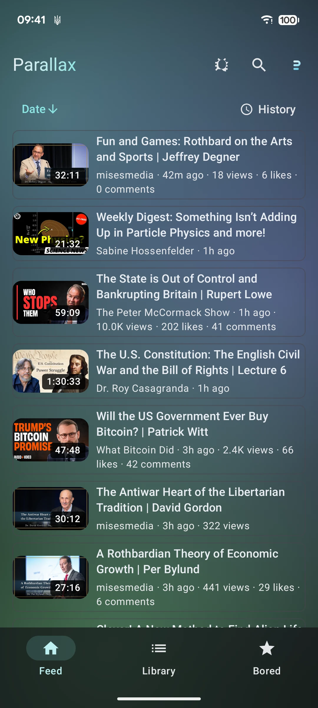
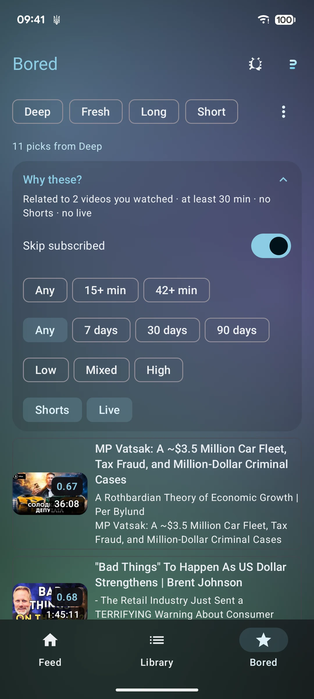
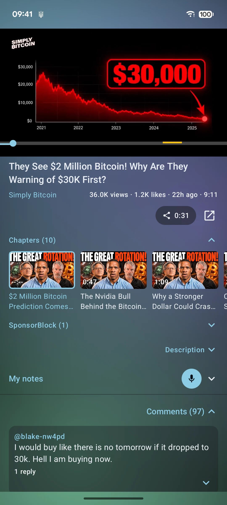
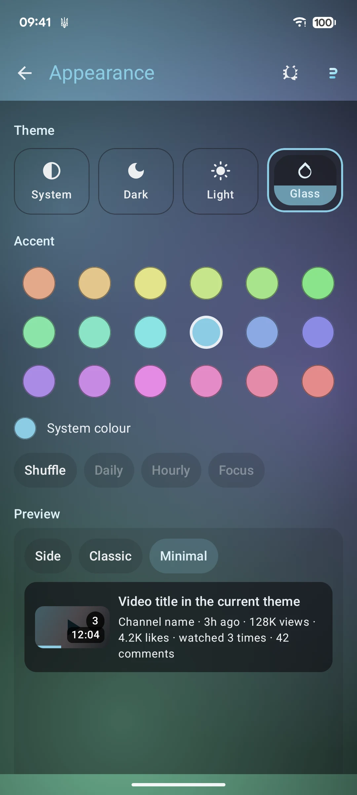
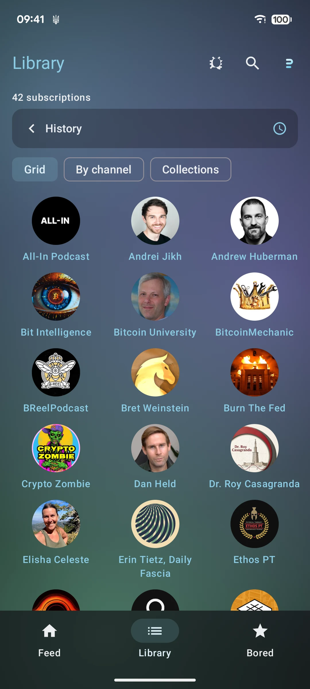

Android 13 and newer · direct APK · GPLv3
A YouTube client that does the things YouTube won't
GlassTube plays YouTube without a Google account. Subscriptions, history, progress and notes live in a database on the phone, so nothing about what you watch leaves it. Lock the screen and the audio keeps going — the phone stays in your pocket, with no ads in the way. SponsorBlock, gestures on the picture, speed in 0.1 steps, notes dictated at the playhead, and a mode for when you cannot decide what to watch.
Download GlassTubeAndroid will ask once whether this source can install apps.

Installing it
-
1
Download the APK
Chrome calls it an unusual file. It is the app; keep it.
-
2
Open it from Downloads
Android asks whether that app may install unknown apps. Allow it once.
-
3
Open GlassTube
First start asks for nothing. No sign-in, no permissions, no account.
What it does differently
Listening
The phone goes in your pocket
The lecture, the long talk, the album you are not watching: lock the screen and the audio carries on, with the video's thumbnail, its title and the controls on the lock screen. Leave the app instead and the mini player does the same. Nothing has to stay lit to keep it playing.
Plays with the screen off · Lock-screen artwork and controls · Mini player
Sharing
Share the range, not the whole video
One panel decides what the link carries: the moment you are on, or a range around it. A YouTube link holds one time, so the start goes in the URL and the end goes in the text. Play to either edge, or pull the end to the video with Sync to now.
This moment · A clip · Go to start · Go to end, two seconds early · Sync to now
Theme
Accent
Size
Card preview
Shown on the card
Change anything here; the card repaints.
Appearance
Glass, and an accent that moves
Four themes: System, Dark, Light and Glass. Glass is translucent surfaces over a still aurora, and it takes its tone from the last ordinary theme you picked. The accent is brand cyan by default, the phone's own colour under System, or one of eighteen hues; shuffle moves it daily, hourly, or every time you open the app, and is off by default. The screen ends with a live preview of the video cards — three layouts and ten facts — and the contrast ratio the current theme reaches.
System · Dark · Light · Glass · 18 accents · shuffle daily, hourly or Focus · live card preview

Bored Mode
When you cannot decide
Recipes instead of a recommendation feed: a deep dive, something fresh, something long, a short break. Each pick shows the path that found it, and Why these? opens the reasoning with sliders for shortest, newest and surprise. Nothing here is stored.
Deep dive · Fresh · Longform · Short break
The rest of it
Everything stays on the phone
Room on the device holds the subscriptions, the history, the progress and the notes. No account, no server, no analytics. Uninstalling deletes all of it.
SponsorBlock, by category
The categories you tick are skipped in the player. The rest is left alone.
Speed in 0.1 steps
Hold the speed pill and slide between 0.25× and 5×, or tap the presets you set.
Notes, dictated
Speak a note at the playhead and it keeps its timestamp. Playing pauses while you talk and resumes when you save.
Collections
Four rules over your own library: gathering dust, almost done, they are back, never opened.
Picture in picture
Leave the app and the video keeps playing in a floating window, until you close it.
Resync, if you want it
Comment timestamps can be aligned against a transcript with your own model key. Off by default, and the key stays in the Android Keystore.
Updates without a store
About checks the manifest beside the APK and installs the next build from here. The old build keeps working if the check fails.
When a stream stalls
If a stream errors or goes quiet for 20 seconds, GlassTube fetches fresh streams and retries twice. A disk cache you size in Settings holds what you have watched.
When YouTube changes
If the extractor stops reading YouTube, it resets and tries once more. An empty search can be re-asked with a shorter query. Both write to the app log.
On the phone



What it is not
- This page and the APK are the distribution.
- Not a downloader yet. Nothing is saved for offline playback.
- Posting comments and replies needs your own Google OAuth client, so it stays off until one is supplied.
- Android 13 or newer. The extractor uses APIs that only exist from there.
If it breaks
It's one person's project. Tell me what happened and which screen you were on; the app keeps its own log and a bug report attaches a screenshot.
Download the latest APKBuilds
One build is published at a time. Each row carries the notes and the sha256 of the signed file.